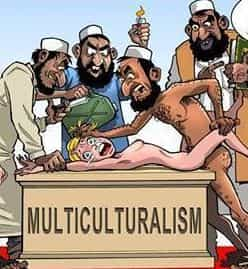

JD is a 27 year old travel bum who jumps from job to job recklessly usually just before getting fired. He is also the author of a short e-book called The Pink Doughnut Phenomenon, which is a thesis on masculinity in the 9-5 workforce.


It is no secret that anti-white racism is a growing trend and a default position in leftist circles nowadays, whether it is promoted by SJW types or white leftists themselves who, after 60 years of incessant propaganda, have bought into the guilt and now espouse self-hate in the name of “tolerance” brownie points.
It is also no secret that one of the primary targets of radical Islamic terrorists is the Western infidel. Who is “the west” exactly? That would be North America, Europe, and Australia—three predominantly white continents where radical Islam is a growing problem. The “refugee” invasion of countries with a high density of whites is all well established. However, there is a disturbing trend gone largely under the radar coming from the “moderate” Muslim crowd. It is the propensity to constantly bring up “white terrorism” immediately after an Islamic terrorist attack anywhere in the world. This comparison makes no logical sense, unless you understand the motive behind this underhanded tactic.
The comparison between whites and Muslims is a non-sequitir with no context. This is of course due to the fact that whites are a race while Muslims are not. There is no universal doctrine associated with being white, nor does one choose to be white. Contrary to Islam, which despite cultural differences within it, does subscribe universally to central doctrines. Being a Muslim is also a choice.
Much like Nazism, Islam is an oppressive political ideology, and much like Scientology, Islam is a religion that makes very large claims for itself. That means when one calls himself a Muslim, he is making a bold statement about his views on the nature of reality (the religious aspect), and the way in which the infidels should be treated under the Sharia (the political aspect.) Islam is not an inherent trait. In that sense, one cannot be bigoted against Muslims any more than one can be bigoted against Nazis or Scientologists.
Thus, until the “Islamophobia” crowd is prepared to condemn anti-Nazi bigotry or anti-Scientologist bigotry, there is no leg to stand on with this “Islamophobia” ploy. But this is not about Islamophobia, as it has already been fully debunked as a propaganda word used to deter infidels from criticizing Islam.

What we are now seeing by mainstream “moderate” Muslims is the constant comparison between whites and Muslims in terms of domestic terrorist attacks. Mainstream Muslim-American voices like those at the The Young Turks, pseudo-scholars like Reza Aslan, and the Hamas-affiliates at CAIR constantly take to Twitter after an Islamic terrorist attack to remind us of a grossly misleading FBI study from a few years ago. It essentially maintains the statistics show that the majority of terrorism in America is committed by white supremacists, so profiling Muslims under any circumstances is racist or bigoted. It states that “since 9/11”, white nationalists have killed more people on American soil than Jihadists have.
This is scandalous intellectual dishonesty that appears to be borne out of a deep-seated anti-white racism. That is the only explanation for this patently absurd apples to oranges comparison, which makes about as much sense as comparing Latinos to Buddhists in a study on gang violence. Nobody would accept a so-called study comparing those two demographics as credible, and a more logical comparison would be between Latinos and blacks (two races) on the topic of gang violence, or between Muslims and Buddhists (two religions) on the topic of terrorism. However, comparing a race to an ideology only makes sense if there is an inherent confirmation bias against one of the two demographics.
This tactic is simply another way for Islamists and radical leftists to “get at” white people, hoping that the white guilt narrative will continue to be an effective deterrent to speaking rationally about Islamic terrorism. However, for the sake of argument, let’s take this comparison between white supremacists and Muslims at face value, because it still does not bode well for the other side if you possess even nominal critical thinking skills.
In the first place, “since 9/11” is obviously a ridiculous phrase. 9/11 was the worst terrorist attack in American history, and it should count towards the total number of casualties. Omitting the casualties of 9/11 for the purposes of this study is akin to stating “if you don’t count the Armenian Genocide, then no Armenians died during the first World War” or “if you don’t count the Iraq War, then Americans haven’t killed many Iraqis recently.” (Coincidentally, one of the purveyors of the constant “white vs. Muslim” comparison, Cenk Uygur, is an Armenian Genocide denier himself.) If we are conducting a study, but outliers can be omitted at will for any or no reason simply to fit the agenda, then there is no end to the potential obscurantism and moving of the goalposts. The next time someone wants to have a discussion about right-wing terrorism, simply omit the Timothy McVeigh bombing and see if you are not accused of deploying a logical fallacy.
Let’s digress. The study found that “since 9/11”, white supremacists had killed 48 people on American soil compared to 26 killed by Muslims, as of 2015. Not withstanding 9/11/01, the study was clearly done before Pulse nightclub shooting in Orlando, where a Jihadist killed 49 people and Muslims instantly ran away with the lead. When you correctly include the Jihadist attack, and roll back the clock one day so as to include 9/11, it looks a bit more like this as of 2017:
Jihadists >3,200 deaths caused by terrorism since 9/10/01
White supremacists +/- 100-150 deaths caused by terrorism since 9/10/01

Finally, let’s also point out that 63% of the US population is white, and 1% of the US population is Muslim. As such, one has to stretch, skew, omit, and selectively edit a study to get 1% of the population’s terrorism offenses under that of the 63% majority, and they are still easily debunked. Note that all of a sudden the same intellectuals who claim blacks are “disproportionately” shot by police forget what per capita means on the topic of Islamic terrorism. Muslims should only be committing 1% of the total terrorism taking place on American soil – not 80%, 20%, or even 5%. Unfortunately, there is no amount of lying one could do to make their terrorism resume as bare as it should be.
The public figures who refer to this comparison most often are not stupid men, but they are vehemently dishonest. Reza Aslan is a PhD, Cenk Uygur is an attorney, and so are most of the Hamas-affiliates at CAIR. They know what per capita means, and they know that comparing whites to Muslims is a logical fallacy. One has to wonder if they are doing it primarily to advance the Islamist cause while pretending to be secularists, as a means to merely denigrate white people, or both.
The good news is there are earnest Muslims (or former Muslims) out there that place their allegiance to secularism, democracy, and western values before their allegiance to Islam, and who understand there is a unique problem with their faith at this moment in history. People like Maajid Nawaz and Aayan Hirsi Ali, who have both been classified as “anti-Muslim extremists” by the left wing hate group known as The Southern Poverty Law Center, are doing great work exposing Islamic extremism all over the world.
These are very brave people, but it is important to note they are not typically those who the mainstream media brands “moderate Muslims”, who are often just Islamists in disguise. They usually carry another moniker like “reformer”, and can usually be identified as those who are viciously demonized as sellouts and Uncle Toms by those same “moderate” Muslims that exhibit virulent anti-white racism.
Read More: Why Does The Left Support Radical Muslims?